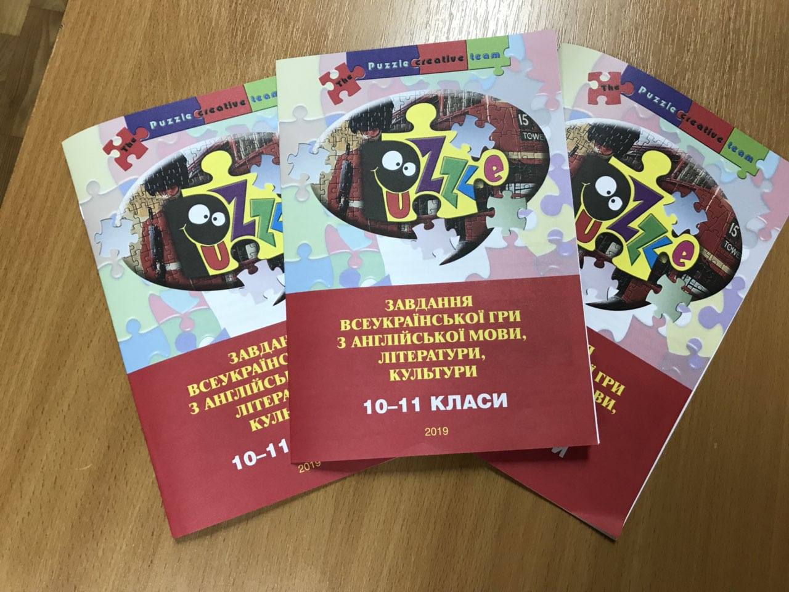
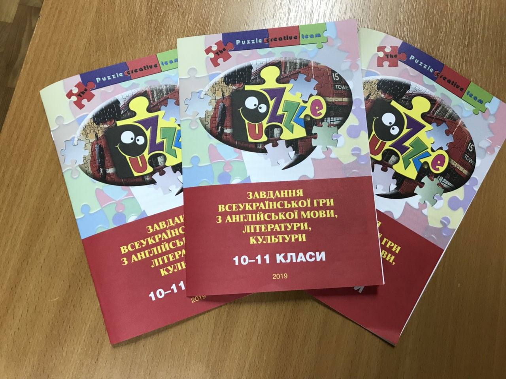

З досвіду роботи вчителя англійської мови Устименко А.І.
Розвиток комунікативних здібностей учнів у процесі вивчення англійскої мови


Комунікативна компетенція передбачає володіння не лише знаннями, а й уміннями й навичками побудови інтенційно-стратегічної програми комунікації, дотримання її і контролю за нею у процесі спілкування; орієнтації на співрозмовника, передбачення його реакції; вибору мовних і паравербальних засобів комунікації і їхнього декодування; подолання комунікативних перешкод, усунення комунікативних шумів, виходу із комунікативного цейтноту тощо.


 
